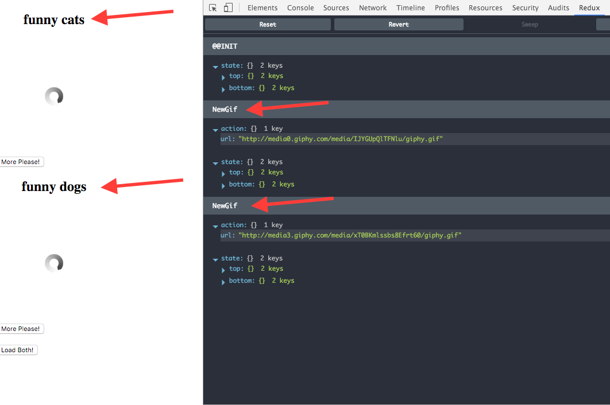

Updater Composition
The reason why nothing really works yet is that we haven't plugged in the GifViewer Updater yet. We also need to initialize the child Models properly by turning our initial Model into a function:
import { Updater } from 'redux-elm';
import { init as gifViewerInit } from '../gif-viewer/updater';
const funnyCatsGifViewerInit = gifViewerInit('funny cats');
const funnyDogsGifViewerInit = gifViewerInit('funny dogs');
export function* init() {
return {
top: yield* funnyCatsGifViewerInit(),
bottom: yield* funnyDogsGifViewerInit()
};
};
export default new Updater(init).toReducer();
We know that the init function exposed by GifViewer is a thunk (function that returns a function). We therefore need to call it twice to invoke it. The first call takes one argument, which is the topic for the GifViewer, and returns the function which can be later used (without parameters) to initialize the Model. We'll use cats for the top GifViewer and dogs for bottom. Hypothetically the app should now correctly show the topic above the GifViewer and trigger the initial API call.
You might have spotted the yield* keyword. This is essential because Generators do not automatically propagate up the call hierarchy, so you need to explicitly say that you want to propagate yields. Therefore, anytime you call a generator function in your Updater, don't forget to prepend the yield* keyword.
Remember: use yield* whenever you want to call a sub-Updater and use yield whenever you want to return a side effect

You can see from the screenshot that we have two GifViewer topics and two corresponding API calls.
Redux DevTools Extension
Are you wondering what is the intriguing browser extension on the right side of the above the screenshot? It's redux-devtools-extension, which allows you to debug your Redux applications. You should check it out.
Note that redux-elm-skeleton already integrates Redux DevTools, so you just need to install the extension in your browser and restart it, and you'll should see the Redux tab in your Chrome Dev Tools view.